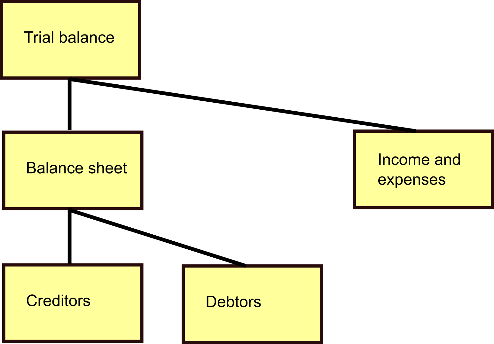

GLedger GLModels - The GLedger model classes¶
The GLModels module contains the classes of the General Ledger model.
These models are the building blocks for the application. They contain the fields in the database specified as Flask-SQLAlchemy mappers. The classes these mappers describe are also the classes where the system calls functions on, to return instances of the classes and to alter the attributes of the classes.
The account¶
Accounts are the central item of GLedger data. Not only does it contain the functional information what this account is about (e.g the human readable name, the type (asset, liability, income, expense)), but also it links to the parent account to take its place in the structure. See Interlude - the ledger structure.
The account balance¶
For the accounts we of course maintain the account balance. If you look in the database you will see different account balances - what gives?!
As a measure to enable removing or compressing history we keep the balance per posting month. For months where the account is closed, the balance is the ultimo balance of that accoounting month, for the current month it is the accumulated balance for this month.
Interlude - the ledger structure¶
Accounts are structured as a tree. At the top there is the trial balance account. All accounts link to their parent, when you want to know what children an account has, you find the ones that link to this one as its parent. Any account can only have one parent, one account has no parent.
The posting¶
Each posting applies an amount to the account in the posting, for the posting month mentioned. We refer to that as processing the posting. Each posting in the journal is for the same month.
The journal¶
Journals can be entered through the API. Journals, contain postings that will contain the account to post to, the value date and the posting month. The posting month defaults to the current month, but for corrections it is possible to post to another posting month.
Journals are lists of postings where the total of debit amounts and credit amounts is equal. The individual amounts don’t need to be equal. For example sales may be counterposted by a combination of decreasing the value of stocks and increasing taxes to be paid.
Processing of the postings is done by journal. The journal contains a flag whether it is successfully processed. As all postings are processed in journals that balance, it is guaranteed that the ledger balances. If a journal does not balance, or there is another error in the journal, it is not processed. Either a corrected version will be sent by the system that delivered it and the offending journal will remain as “unposted”, or the journal will be repaired by the system that delivered it and it will then be processed. A repair message for a journal that was successfully processed, will be ignored and will remain as “unposted”.
The posting month¶
To prevent accidental updating of posting months that are considered done, these can be closed. This prevents the system from accepting postings, actually all of the journal containing the offending posting will be rejected.